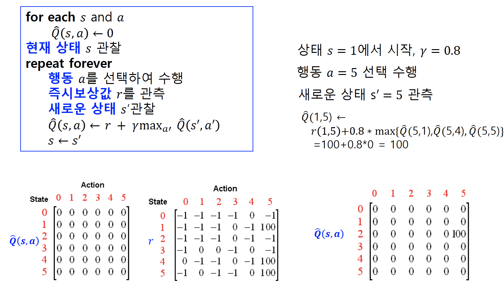

20221208
몬테카를로 학습 (Monte-Carlo learning, MC)
Monte-Carlo prediction (몬테카를로 예측)
샘플링을 통해 상태 가치 함수를 학습
충분한 에피소드 (episode, a sample)를 거치고 나면 상태 가치 함수가 정답에 가까워 짐
\[ V_{n + 1}(s) = \frac{1}{n}\sum_{i = 1}^n{G_i} = \frac{1}{n}(G_n + \sum_{i = 1}^{n - 1}{G_i}) = \frac{1}{n}(G_n + (n - 1) \frac{1}{n - 1}\sum_{i = 1}^{n - 1}{G_i}) = \frac{1}{n}(G_n + (n - 1)V_n(s)) = V_n(s) + \frac{1}{n}(G_n - V_n(s)) \]
이전 상태 가치 함수와 새로운 획득 보상과의 차를 더해 상태 가치 함수를 업데이트 함
\(G_n - V_n(s)\): 오차 (error)
1/n을 \(\alpha\)로 치환하여 학습 속도 (learning rate)로 여김 →
\[ V_{n + 1}(s) = V_n(s) + \alpha(G_n - V_n(s)) \]
총 획득 보상 G는 에피소드가 끝나야 알 수 있음
몬테카를로 제어
상태가치 함수 대신 행동가치 함수를 사용
\[ Q_{n + 1}(s, a) = Q(s, a) + \alpha(G_n - Q_n(s, a)) \]
시간차 학습 (temporal-difference learning, TD)
시간차 예측
\[ V(S_t) = V(S_t) + \alpha (R_t - V(S_t)) \gets G_n = r_{t + 1} + \gamma V(S_{t + 1}) = V(S_t) + \alpha (r_{t + 1} + \gamma V(S_{t + 1}) - V(S_t)) \]
몬테카를로 예측과 다르게 매 시간마다 가치 함수를 갱신할 수 있음
다음 상태 가치로 가치 함수를 갱신함으로 TD는 부트스트랩 알고리즘
SARSA (State-Action-Reward-State-Action) 강화학습
On-policy 시간차 제어 (on-policy temporal-difference control)
정책 결정
Greedy method (탐욕 방법)
- 현재 상태에서 가장 큰 행동 가치함수 값을 주는 행동을 선택
\[ \pi(s) = argmax Q(s, a) \]
\(\epsilon\)-greedy method
- \(1 - \epsilon\)의 확률로는 탐욕방법처럼 수행하고, \(\epsilon\)의 확률로는 무작위로 행동을 선택
정책 결정으로부터 샘플 (s, a, r, s’, a’)를 구성해서 Q를 계산함
\[ Q(s, a) = Q(s, a) + \alpha(r + \gamma Q(s' + a') - Q(s, a)) \]
다음 상태 s’에서 가장 큰 Q값을 이용하여 Q함수를 갱신
Q-learning 알고리즘과 DQN (Deep Q-network) 강화학습
현재 상태 s에서 \(\epsilon\)-greedy 방법을 적용함으로써 현재 상태 s에서 행동 a를 실행하여 보상 r을 받고, 다음 상태 s’를 결정하여, 샘플 (s, a, r, s’)를 구성
Bellman 최적 방정식을 이용하여 Q(s, a)를 갱신함
\[ Q(s, a) = Q(s, a) + \alpha (r + \gamma argmax Q(s', a') - Q(s, a)) \]
- Q함수를 갱신하기 위해 다음 상태 s’에서의 행동 a’를 결정하는 정책을 최대로 하는 행동 a’, 실제로 다음 상태로 가서 하는 행동을 결정하는 정책이 다름 (off-policy 정책)
여기서, Q함수를 심층신경망을 사용하면 DQN (Deep Q-network)이 됨

강화학습 알고리즘
몬테카를로 방법 (Monte Carlo method)
시간 차이 학습 (temporal difference learning, TD-learning)
정책 그레디언트 알고리즘 (policy gradient algorithm)
- 연속구간 행동을 갖는 강화학습
역강화 학습 (inverse reinforcement learning)
보상함수가 직접적으로 제공되지 않는 경우 적용
전문가의 바람직한 행동 시연이 가능한 상황
시연을 관측한 데이터로부터 보상함수를 학습 → 보상함수를 사용하여 가치함수를 학습하고 정책 결정
상태 s에 대한 전형적인 보상함수 R(s)의 표현
- 상태 s의 특징 \(\phi_i(s)\)들에 대한 선형결합 표현
\[ R(s) = \sum_{i = 1}^N{\omega_i \phi_i(s)} \]
계획수립 (planning)
주어진 계획수립 문제의 임의의 초기 상태에서 목표 상태 중의 하나로 도달할 수 있게 하는 일련의 행동을 생성하는 것

계획 (plan): pickup(c) → putdown(c, floor) → pickup(b) → putdown(b, a) → pickup(c) → putdown (c, b)
계획수립의 사례
일상에서 한하게 일어나는 일
- 하루 계획
- 등교길의 교통편 이용 계획


로봇의 계획수립
움직임 계획수립 (motion planning)
- 원하는 움직임 작업을 수행하도록 제약조건을 만족시키면서 최소의 비용으로 일련의 움직임을 찾아내는 일
경로 계획수립 (path planning)
- 시작 위치에서 목적 위치로 가기 위해 관절이나 바퀴를 이동시킬 순차적인 위치를 결정하는 일
궤적 계획수립 (trajectory planning)
- 주어진 경로와 제약조건 및 물리적인 특성을 고려하여 매 시점의 관절 등의 위치, 속도, 가속도 등을 결정하는 일

강화학습에서 정책(policy)의 학습

스퀘줄링 문제
프로젝트 관리
군사작전 계획
정보수집
자원관리
계획수립 문제의 구성요소
초기 상태 (initial state)에 대한 명세 (description)
원하는 목표 상태 (goal state)에 대한 명세
가능한 행동 (action)들에 대한 명세

agent (에이전트)와 계획수립
에이전트
위임받은 일을 자율적(autonomous)이고 지능적 (intelligent)하게 처리하는 개체
소프트웨어 에이전트, 물리적 에이전트 (robot)
어떻게 일을 할지 (how)를 말하지 않고, 목적 (goal, what)만을 말하면 알아서 처리할 수 있는 능력 필요
- 계획수립 (planning)이 핵심 요소)
계획수립 문제의 형태
고전적 계획수립 (classical planning)
마르코프 결정과정 (Markov Decision Process, MDP)
부분관측 마르코프 결정과정 (Partially Observable Markov Decision Process, POMDP)
다중 에이전트 (multi-agent) 계획수립
고전적 계획수립 문제 (classical planning problem)
가장 간단한 계획수립 문제 무류
일련의 행동들을 수행한 이후의 세계(world)의 상태 예측 가능
계획은 일련의 행동들로 정의
- 목표 상태에 도달하기 위해 어떤 행동들을 해야 하는지 미리 결정할 수 있음
기본 전제
초기 상태는 하나만 주어진다
행동들은 지속시간이 없고, 행동의 결과가 결정적이고, 한 번에 하나의 행동만 수행될 수 있다
행동을 하는 에이전트는 하나 뿐이다.
마르코프 결정과정 문제 (Markov Decision Process, MDP)
행동들의 결과는 비결정적이고(nondeterministic)이고, 에이전트가 행동을 통제할 수 있는 문제
강화학습(reinforcement learning)에 관심을 갖는 문제
이산시간 마르코프 결정과정 문제 (discrete-time Markov decision processes, discrete-time MDP)
행동들은 지속시간이 없다
행동의 결과가 확률에 따라 결정되어 비결정적이다
행동의 결과는 관측 가능하여 확인할 수 있다
보상함수(reward function)를 최대화하는 것을 목적으로 한다
행동을 하는 에이전트는 하나 뿐이다.
부분관측 마르코프 결정과정 (partially observable Markov decision process, POMDP)
행동의 결과가 확률에 따라 결정되는 비결정적인 마르코프 결정과정
행동의 결과는 부분적으로(간접적으로) 관측
- 현재 상태를 정확히 알 수 없고 확률적인 분포로만 추정
현재 상태에 대한 확률적인 분포를 믿음(belif)이라고 함
행동을 하면서 이러한 믿음을 계속 갱신
다중 에이전트 계획수립 문제 (multi-agent planning)
여러 에이전트가 있는 계획수립 문제
다중 에이전트의 작업에서 필요한 사항
- 하나의 공동 목표를 위한 에이전트들이 계획수립을 하는 것
- 작업 및 자원에 대한 협상을 통해 계획을 정제하는 것
- 목표의 달성을 위해 에이전트들의 작업을 조정하는 것